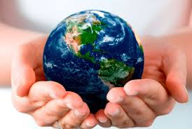

Dia internacional de la madre tierra 22 de abril
- 
-

-

-

-

Realizado por:
JOSE LUIS OLIVARES RAMOS
4° "H"
ESPECIALIDAD
PROGRAMACION
SUBMODULO
Desarrolla Aplicaciones Moviles
Docente
Lic.José Antonio Gomez Hernandez
4° "H"
PROGRAMACION
Desarrolla Aplicaciones Moviles
Lic.José Antonio Gomez Hernandez
Celebramos el dia internacional de la madre tierra para recordar que el planeta y sus ecosistemas nos dan la vida y el sustento. con este dia, asumimos, ademas,
la responsabilidad colectiva, como nos recordaba la declaracion de Rio de 1992, de fomentar esta armonia con la naturaleza y la tierra.
Este dia nos brinda tambien la oportunidad de concienciar a todos los habitantes de la tierra acerca de los problemas que afectan a la Tierra y a las diferentes formas de vida que en él se desarrollan.

El origen de esta celebración comenzó en 1970, cuando 20 millones de norteamericanos comenzaron a manifestarse por un medio ambiente sano y sustentable.
Fue en 2009 cuando la Organización de las Naciones Unidas declaró el 22 de abril como el Día Mundial de la Madre Tierra.
Este año, la celebración está dedicada a llevar a cabo nuevas acciones en la lucha contra el Cambio Climático.
Celebramos el Día Internacional de la Madre Tierra para recordar que el planeta y sus ecosistemas nos dan la vida y el sustento.
Con este día, asumimos, además, la responsabilidad colectiva, como nos recordaba la Declaración de Río de 1992,
de fomentar esta armonía con la naturaleza y la Madre Tierra
El 23 de abril de 2018 se realizó en la sede de las Naciones Unidas en Nueva York, el 8° Diálogo Interactivo sobre Armonía con la Naturaleza,
en ocasión de la conmemoración del Día Internacional de la Madre Tierra.
El evento fue convenido por el Presidente de la Asamblea General, Miroslav Lajcak, quien destacó la importancia del Diálogo para intercambiar
ideas sobre desarrollo y patrones de producción y consumo sostenibles en armonía con la naturaleza.
1. VEHICULIZAR UNA NUEVA CULTURA DEL AGUA
2. IMPULSAR UNA GESTIÓN INTEGRAL DE LOS RESIDUOS
3. PREVENIR LA CONTAMINACIÓN ATMOSFÉRICA Y DEL CAMBIO CLIMÁTICO
4. IMPLANTAR UNA NUEVA CULTURA ENERGÉTICA
5. FAVORECER LA MOVILIDAD SOSTENIBLE
6. FOMENTAR EL CONSUMO RESPONSABLE Y LA PRODUCCIÓN ECOLÓGICA
7. CONSERVACIÓN Y MEJORA DE LA BIODIVERSIDAD
8. IMPLICAR A LAS EMPRESAS DEL TERRITORIO EN LAS PRÁCTICAS DE RESPONSABILIDAD SOCIAL CORPORATIVA
9. EDUCAR PARA EL CAMBIO HACIA LA SOSTENIBILIDAD
10. VALIDAR POLÍTICAS PÚBLICAS DE DESARROLLO INTEGRAL Y SOSTENIBLE DEL TERRITORIO DESDE LA PARTICIPACIÓN